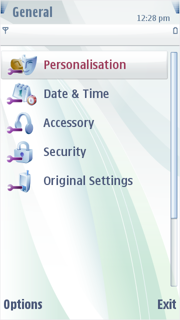
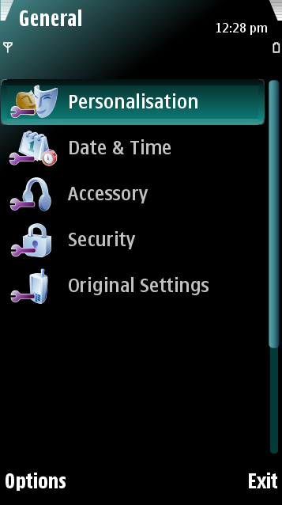

Highlights
The Symbian mobile phone uses highlights as a graphical effect. Carbide.ui
contains the following highlight options:
List
Highlight
This is the highlight that is used in a screen with a list view, for example, the
General
highlight list.
Grid
Highlight
This is the highlight that is used in the Applications screen's grid.
Input
Highlight
This is the highlight that is used for an Input field, for example, in the Meeting
screen's Repeat options.


Figure: Default
and customized list highlights